01 / OVERVIEW
从堆叠到循环
标准 Transformer 通过逐层堆叠增加模型深度；Loop Transformer 则重复执行一组固定的 Transformer 层，在不同迭代中复用相同参数，以增加有效计算深度。
把“有多少层参数”和“执行多少层计算”分开，是理解循环架构的起点。
这份技术分享围绕四个问题展开：什么是 Loop Transformer？它带来哪些优势与缺陷？它如何影响负载与仿真建模？近期研究又在解决什么问题？
02 / BASICS
基础概念与计算量
Loop Transformer 也称 Looped Transformer 或 Recurrent-Depth Transformer。根据循环粒度，可以分为三种形式：
- Model Loop
- 重复执行整个模型中的 Transformer 层组。
- Block Loop
- 对包含若干层的局部模块进行循环。
- Layer Loop
- 单层重复执行，再进入下一层。
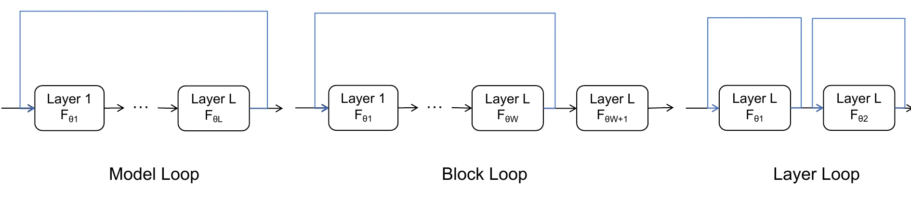
参数减少，计算与缓存如何变化？
记 L 为普通 Transformer 的层数，W 为循环窗口大小（每次循环包含的层数），T 为循环次数。E 是嵌入层等固定参数，P、C、K 分别表示单层参数量、计算量和 KV cache。
| 对比项 | Transformer | Loop Transformer |
|---|---|---|
| 参数层数 | L | W（通常 W ≪ L） |
| 计算层数 | L | W × T |
| 总参数量 | E + P × L | E + P × W |
| 计算量 | C × L | C × W × T |
| KV cache | K × L | K × W × T |
在 W × T = L 的计算深度下，循环模块可以使用更少参数。但参数共享并不自动等于 KV cache 共享：不同循环轮次的状态仍可能需要分别缓存。
参数更少，能力会损失多少？
原稿使用 LoopFormer 的实验讨论参数量、计算预算与模型能力之间的权衡。是否能用循环弥补参数减少带来的影响，需要结合具体模型、训练方式与任务评估。
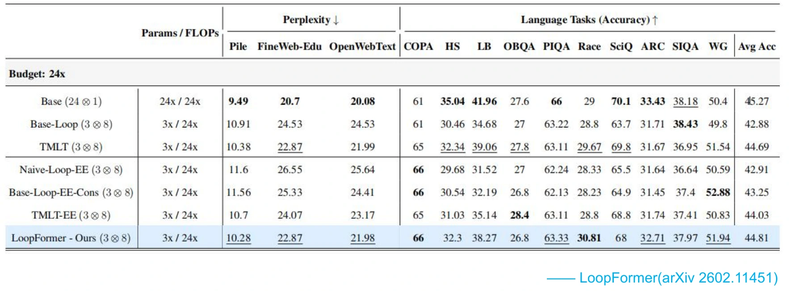
03 / STEP CONDITIONING
步长与阶段感知
共享同一组参数，并不意味着每轮计算都必须采用完全相同的输入条件。原稿列出三种逐步增加阶段信息的方式。
共享层的直接循环
每一轮将当前隐状态交给同一个参数化变换。
Learned Step Embedding
ek 是第 k 次循环对应的可学习向量，以逐元素相加的方式赋予共享层阶段感知能力。
Time + Step Size Conditioning
LoopFormer 引入当前时间位置 tk 和本次前进的步长 Δtk。原稿采用从 t0 = 0 到 tM = 1 的表示。
04 / ADAPTIVE COMPUTE
门控与提前退出
Halting gate / Early-Exit 用来打破固定循环次数，让模型根据状态决定何时退出。它决定“还要计算几轮”，与上一节的阶段信息共同构成自适应计算机制。
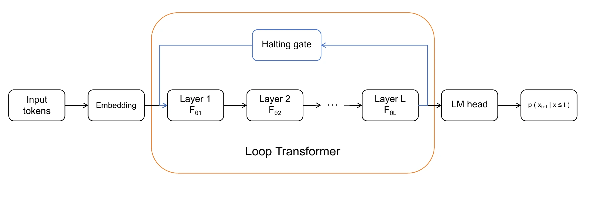
自适应计算时间：ACT
Universal Transformer 中的 Adaptive Computation Time 使用可学习的门控概率：
当累积概率超过 1 − ε 时结束循环。最终状态由各轮隐状态加权聚合：
其中 N 是退出时的循环次数，R = 1 − ∑k=1N−1 pk 是最后一轮的剩余权重。原稿关注的性能问题是：保留多轮 hk 会增加显存占用。
阈值置信度门控
原稿以 AMOR 为例，利用输出概率分布的香农熵判断是否继续计算：
pi 表示词表中第 i 个词的概率。当 H < τ 时，预测分布足够集中，触发退出。
门控本身的计算开销
以下沿用原稿的 FLOPs 估算口径。记 d 为隐藏维度，S 为序列长度，T 为步数，V 为词表大小，Tmax 为最大循环步数。
| 机制 | 计算项 | 原稿估算 |
|---|---|---|
| ACT · Cube | 前向投影 | 2dST |
| ACT · Cube | 反向投影梯度 | 4dST |
| ACT · Vector | 前向特征加权聚合 | 2dST |
| ACT · Vector | 反向特征加权回传 | 2dST |
| 置信度 · Cube | 前向投影 | 2dVST |
| 置信度 · Cube | 反向对特征求导 | 2dVST |
| 置信度 · Cube | 反向对权重求导 | 2dVST |
| 置信度 · Vector | 前向 Softmax | 3VST |
| 置信度 · Vector | 反向交叉熵损失求导 | VSTₘₐₓ |
Softmax 的找最大值、指数、求和与归一化，以及交叉熵中的“预测概率减去 One-hot 标签”，均沿用原稿说明；上述数字是原稿的估算口径。
Decode 时，退出轮数不同怎么办？
如果前一个 token 在第 3 轮退出，而下一个 token 需要第 4 轮计算，就会出现缺少对应轮次 KV cache 的问题。
原稿给出状态冻结广播这一处理思路：将已退出 token 的状态视为收敛状态，通过显存虚拟指针映射，让后续轮次的 KV cache 指向第 3 轮的缓存。
05 / SYSTEMS & WORKLOADS
访存与并行负载
参数访问顺序发生变化
循环改变了参数的复用时序。Block Loop 以模块为单位重复，Layer Loop 则在相邻轮次持续复用同一层参数。
A B C D E F G H IA B C · A B C · A B CA A A · B B B · C C CPP：循环是否跨越 stage？
- 循环完全位于一个 stage 内：可视为更大的局部计算，重点关注 stage 时长与激活容量。
- Block Loop 跨越多个 stage：原来的单次顺序前向不再完整描述计算路径，需要重新适配 1F1B 调度。
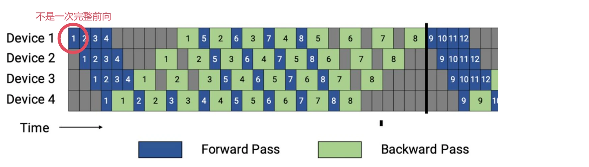
原稿的处理方案是展开为虚拟 stage，调度器同时识别物理 stage 和循环轮次：
A₁ → B₁ → A₂ → B₂Device 1 → Device 2 → Device 1 → Device 2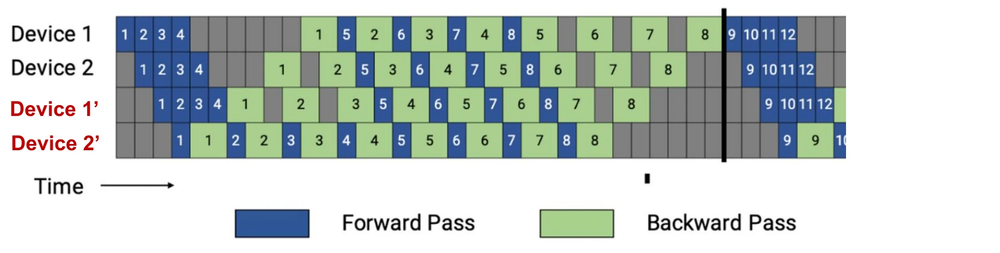
EP：热点专家可能持续更久
原稿用一个示意负载说明，循环可能让热点专家持续繁忙，冷门专家重复等待。示例中，不循环时各 GPU 的 token 负载为 20 / 4 / 4 / 4，循环两次后为 40 / 8 / 8 / 8。
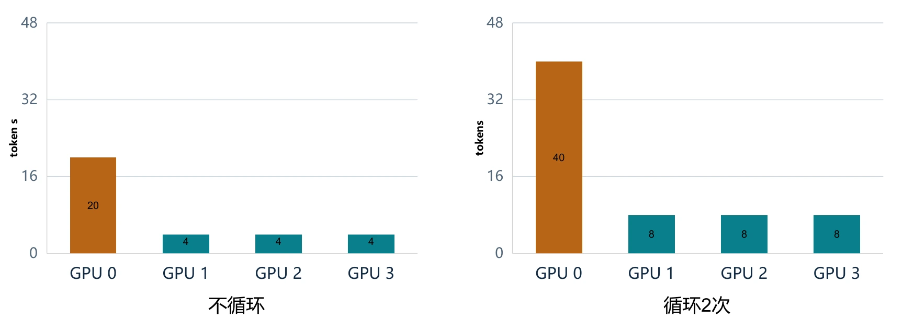
时序疲劳偏置
原稿提出使用 Temporal Fatigue Bias 记录专家在多轮计算中的使用情况，在后续路由中加入时序偏置，以缓解持续选择相同热点专家的问题。
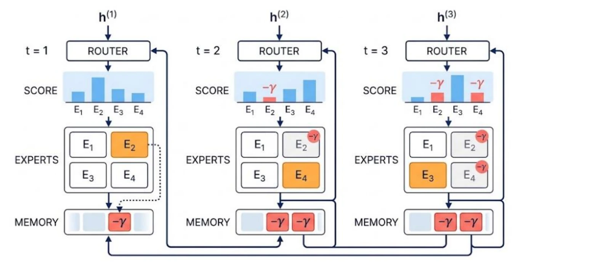
原稿同时指出，Aux Loss Free 式的全局调节需要关注两个问题：
- 延迟反馈带来的钟摆效应：前一轮很热的专家，下一轮可能被压得过冷。
- 全局标量对不同阶段的误伤：某专家可能对浅层基础表征很重要，不能只为均衡负载而强行改选更适合深层的专家。
06 / CACHE & DEPTH
YOCO 与 YOCO-U
YOCO：You Only Cache Once
YOCO 采用 Decoder-Decoder 架构，分为 Self-Decoder 和 Cross-Decoder。前者生成全局 KV cache，后者通过交叉注意力共享读取这份缓存。
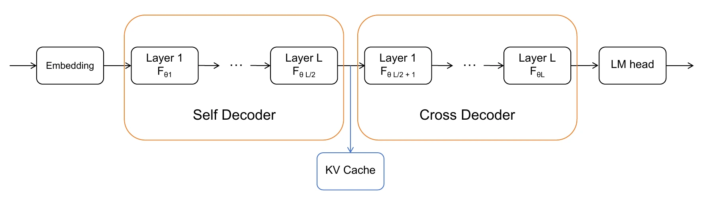
前半段 Self-Decoder 采用 Efficient Self-Attention（ESA）。原稿以滑动窗口注意力 SWA 为例，对比它与全局因果注意力的缓存增长：在固定窗口下，局部缓存不随序列长度持续线性增加。
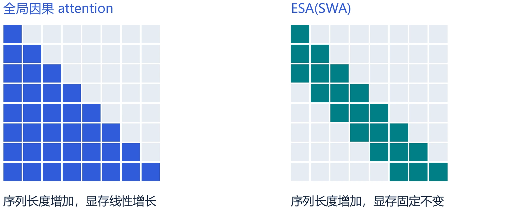
YOCO-U：在 Self-Decoder 中加入循环
YOCO-U（Universal）在 YOCO 的 Self-Decoder 中引入循环，将参数复用与缓存共享结合起来。
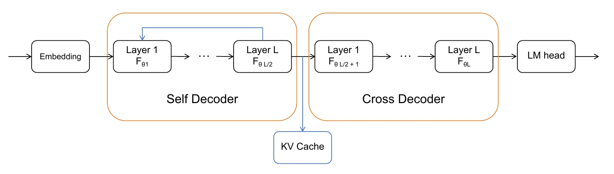
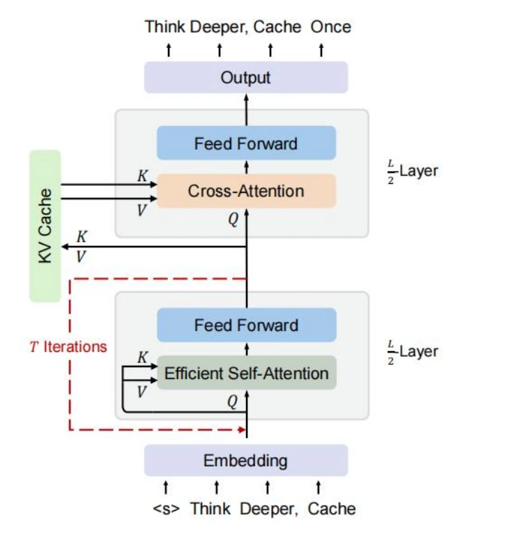
原稿中的实验对比
原稿展示了 1.3B Dense 模型、20B 训练 tokens 设置下的结果，并标注普通 20 层、20 层循环两次，以及“10 层循环三次 + 10 层”等计算结构。
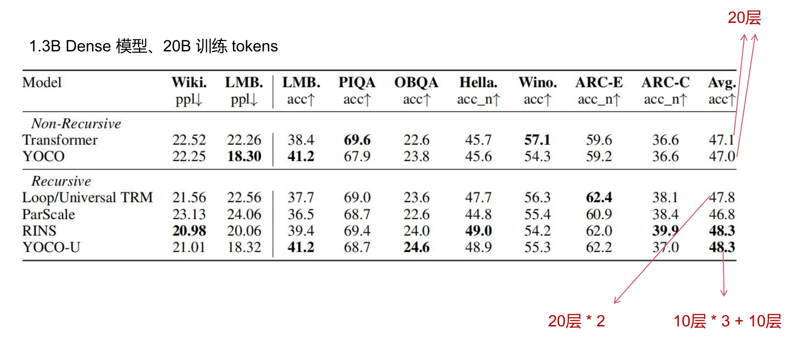
四种架构的简化比较
下表沿用原稿第 32 页的符号。C 与 c 区分两类 decoder 层的计算量，K 与 k 区分全局缓存及相应局部缓存项。
| 对比项 | Transformer | Loop Transformer | YOCO | YOCO-U |
|---|---|---|---|---|
| 参数层数 | L | W | L | W + L/2 |
| 计算层数 | L | W × T | L | W × T + L/2 |
| 总参数量 | E + P × L | E + P × W | E + P × L | E + P × W + P × (L/2) |
| 计算量 | C × L | C × W × T | C × (L/2) + c × (L/2) | C × (W × T) + c × (L/2) |
| KV cache | K × L | K × W × T | K + (L/2) × k | K + (W × T) × k |
07 / TAKEAWAYS
总结
- 用循环增加有效深度。Model Loop、Block Loop、Layer Loop 以不同粒度复用 Transformer 参数。
- 节省参数，不代表没有代价。模型能力、执行时延与多轮 KV cache 都需要结合具体实现权衡。
- 负载模型需要感知循环。参数访问顺序、跨 stage 调度与专家负载都会受到影响。
- 研究在两个方向上推进。步长与门控改善计算分配；YOCO-U 等架构探索循环与缓存效率的结合。
08 / FURTHER READING
研究脉络与参考
原稿的时间线从 2018 年 Universal Transformer，经过 2023 年的算法学习研究、2025 年的 latent reasoning，延伸到 2026 年的循环训练、自适应计算与缓存架构。以下保留原稿提供的论文名称与 arXiv 编号，供进一步阅读。
- 核心机制 · 2018Universal TransformersarXiv: 1807.03819
- 算法学习 · 2023Looped Transformers 的算法学习研究arXiv: 2311.12424（原稿时间线中的 Algorithms）
- 循环深度与推理Scaling up Test-Time Compute with Latent Reasoning: A Recurrent Depth ApproacharXiv: 2502.05171
- 循环预训练Reasoning with Latent Thoughts: On the Power of Looped TransformersarXiv: 2502.17416
- 稳定性与训练效率On the Residual Scaling of Looped Transformers: Stability and TransferabilityarXiv: 2606.18524
- 自适应计算LoopFormer: Elastic-Depth Looped Transformers for Latent Reasoning via Shortcut ModulationarXiv: 2602.11451
- 置信度门控AMORarXiv: 2602.13215
- 部署效率LoopCoder-v2: Only Loop Once for Efficient Test-Time Computation ScalingarXiv: 2606.18023
- 缓存与能力YOCO-U: Universal YOCO for Efficient Depth ScalingarXiv: 2604.01220
根据 NOTNGY 提供的 34 页《LoopTransformer_展开》整理。网页合并了展开演示中的重复步骤，保留主要内容、公式与关键图表；图表和实验结果来自原稿。
下载完整 PDF（约 1 MB） ↓技术分享：NOTNGY · 网页整理与实现：GPT